Global Firms, Local Students
Multinational Presence Shapes College Major Choice
University of Oregon
Growth of FDI in LMICs

Lower- and Middle-Income Countries (LMICs) have seen an increasing rate of fdi inflow in recent decades
Source: World Bank
Tertiary Enrollment Growth in LMICs
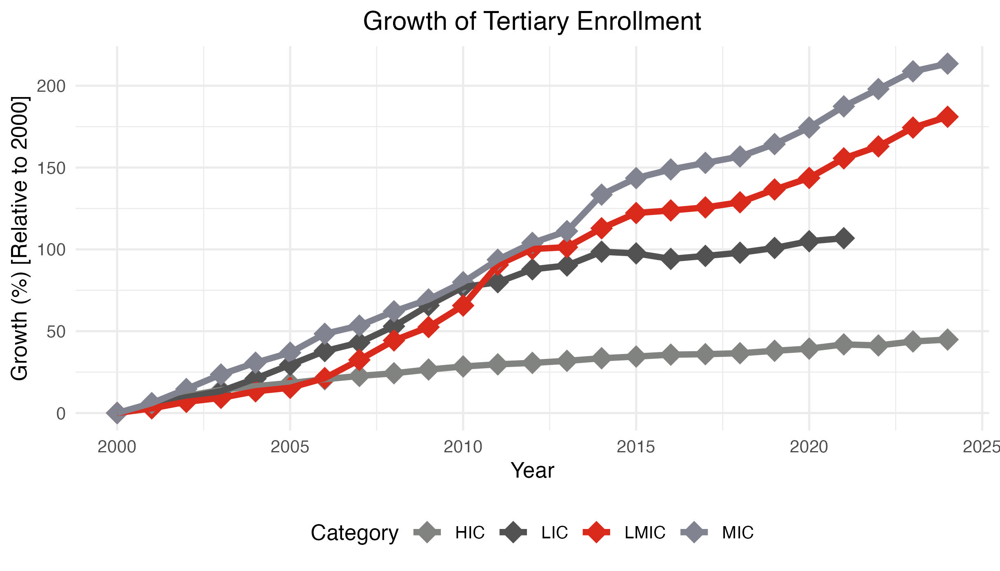Tertiary enrollment rates have increased in LMICs
Source: World Bank
Research Question
Hypothesis: Multinational Firms affect skill specialization decisions
- I use administrative data of university applications and location of MNCs within industrial parks in Costa Rica from 2010 to 2019
Identification Strategy
- Spatial and temporal variation in industry composition
- Distance between students and MNCs
- Key Variable: Exposure to near MNCs
Preview of Results
- A shift from low to high exposure to Manufacturing MNCs increases the probability of choosing a major within Stem and Applied Sciences by 52.9 p.p.
- Decreases probability of choosing Arts by 25 p.p. and Social Sciences by 27.9 p.p.
- A shift from low to high exposure to Administrative Service MNCs increases the probability of choosing a major within Social Sciences and Professional Studies by 39.81 p.p.
- Decreases the probability of choosing Arts by 30.58 p.p. and STEM and Applied Sciences by 8.96 p.p.
- Directional effects are robust to removing the industry-field mapping
- Multinational Firm effects are extremely local
- Heterogeneity tests show no difference between men and women
Preview of Results
- A shift from low to high exposure to Manufacturing MNCs increases the probability of choosing a major within Stem and Applied Sciences by 52.9 p.p.
- Decreases probability of choosing Arts by 25 p.p. and Social Sciences by 27.9 p.p.
- A shift from low to high exposure to Administrative Service MNCs increases the probability of choosing a major within Social Sciences and Professional Studies by 39.81 p.p.
- Decreases the probability of choosing Arts by 30.58 p.p. and STEM and Applied Sciences by 8.96 p.p.
- Directional effects are robust to removing the industry-field mapping
- Multinational Firm effects are extremely local
- Heterogeneity tests show no difference between men and women
Preview of Results
- A shift from low to high exposure to Manufacturing MNCs increases the probability of choosing a major within Stem and Applied Sciences by 52.9 p.p.
- Decreases probability of choosing Arts by 25 p.p. and Social Sciences by 27.9 p.p.
- A shift from low to high exposure to Administrative Service MNCs increases the probability of choosing a major within Social Sciences and Professional Studies by 39.81 p.p.
- Decreases the probability of choosing Arts by 30.58 p.p. and STEM and Applied Sciences by 8.96 p.p.
- Directional effects are robust to removing the industry-field mapping
- Multinational Firm effects are extremely local
- Heterogeneity tests show no difference between men and women
Preview of Results
- A shift from low to high exposure to Manufacturing MNCs increases the probability of choosing a major within Stem and Applied Sciences by 52.9 p.p.
- Decreases probability of choosing Arts by 25 p.p. and Social Sciences by 27.9 p.p.
- A shift from low to high exposure to Administrative Service MNCs increases the probability of choosing a major within Social Sciences and Professional Studies by 39.81 p.p.
- Decreases the probability of choosing Arts by 30.58 p.p. and STEM and Applied Sciences by 8.96 p.p.
- Directional effects are robust to removing the industry-field mapping
- Multinational Firm effects are extremely local
- Heterogeneity tests show no difference between men and women
Contributions
Mechanism of fdi shifting human capital specialization decisions
Determinants of College Major Choice
- Information availability
- Wages
- Non-pecuniary returns
- Altonji (1993)
- Ability and preference sorting
Contributions
Mechanism of fdi shifting human capital specialization decisions
Determinants of College Major Choice
- Wages | Non-pecuniary returns | Ability and preference sorting | Information availability
Effects of increased trade/fdi inflow on local labor markets
Context on Costa Rica
Education
Public universities require applicants to list their two preferred majors when applying Example
- Helps identify demand for major, rather than observing equilibrium enrollment outcomes
- Applicants submit demographic information
Multinational Firms
Costa Rica incentivizes FDI inflows through dedicated Free Trade Zone (FTZ) regime
- Firms locate within multinational dedicated industrial parks
- Multiple locations across the country
Context on Costa Rica GAM
 Administrative Map
Administrative Map
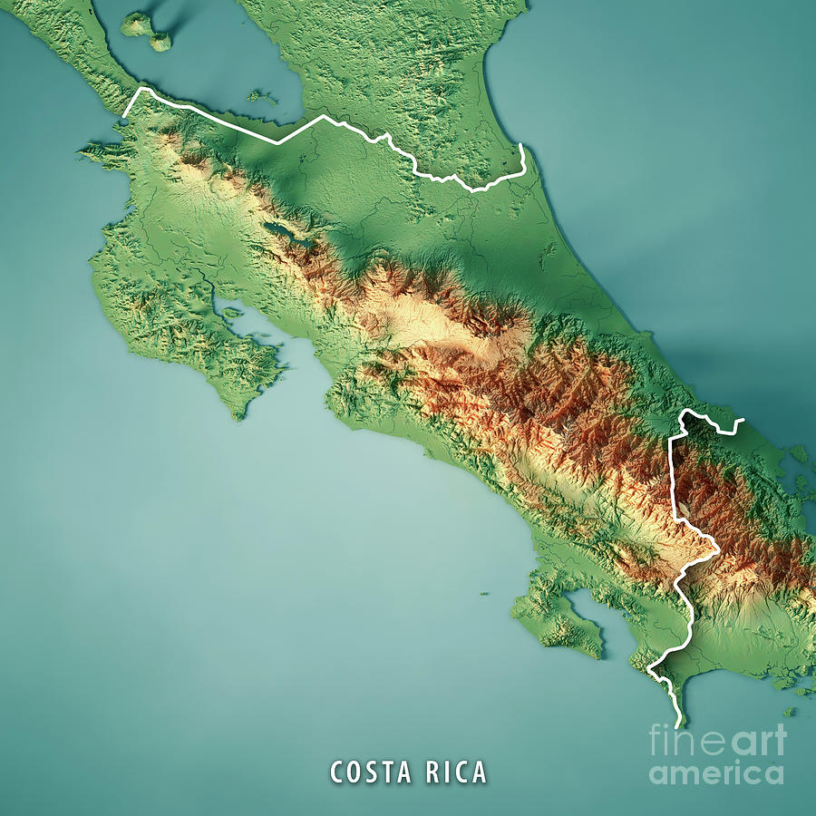 Topographic Map
Data
Major Choice Data
- Individual applications (n = 230,162)
- Years: 2010 - 2019
- Location: 434 Districts Country Central Valley
- Majors are grouped into broad bins using UNESCO education categories
STEM & Applied Sciences
- Natural Sciences
- Engineering
- Information Technologies
- Agricultural Sciences
- Health
Soc. Sci. & Prof. Studies
- Business Administration
- Social Sciences
- Education
Arts, Writing, & Service
- Arts
- Humanities
- Tourism
Data
Multinational Firms
- Multinational Firms operating under FTZ regime (n = 253)
- Year of Entry: 2003 - 2019
- Location: 39 Districts Country Central Valley
- Six Industries (2-digit ISIC)
- Administrative and Support Services
- Information and Communication
- Manufacturing
- Wholesale Trade
- Professional, Scientific and Technical Activities
- Transportation and Warehousing
Data
Distance

Roughly half of districts have another district within 5 kilometers, and the curve rises steeply at short distances, indicating dense spatial clustering
Student’s Choice Utility
Individuals Utility from Studying in Field of Study (m) is:
\[\begin{equation} U_{idmt} = \beta_{m} \Gamma_{dmjt} + \gamma_{i}X^{'}_{i} + \alpha_{c} + \alpha_{t} + \varepsilon_{idmt} \end{equation}\]
Subscripts
\(i =\) individual, \(\; d =\) district-of-residence, \(\; m =\) field of study, \(\; j =\) industry, \(\; c =\) canton, \(\; t =\) year
- \(\Gamma_{djt}\): MNC Presence Index
- \(\beta_{m}\): Percentage Point Change in the Probability of Choosing Field of Study \(m\)
- \(X_{i}^{'}\): Individual Characteristics Vector
- age, sex, high school, unemployment rate, entry score
- \(\alpha_{c}\): Canton Fixed Effect
- \(\alpha_{t}\): Year Fixed Effect
Multinational Firm Presence Index
\[\begin{align} \Gamma_{dmjt} = p_{mjt} \times \left(\sum_{d'}\sum_{j} \dfrac{\text{Tenure}_{k(j),d't}}{exp(\text{dist}_{dd'})} \right) \end{align}\]
Subscripts
\(d =\) district-of-residence, \(\; d' =\) district-of-operation, \(\; k(j) =\) firm \(\,k \,\) in industry \(\, j\), \(\; t =\) year
\(\text{Tenure}_{k(j),d't}\): Tenure of firm captures how long individual has been aware/exposed to presence of MNC
\(exp(\text{dist}_{dd'})\): Distance (in km) from student-district to firm-district
\(p_{mjt}\): Industry Attachment Probabilities Distribution Details
Extensive Margin Effects Table
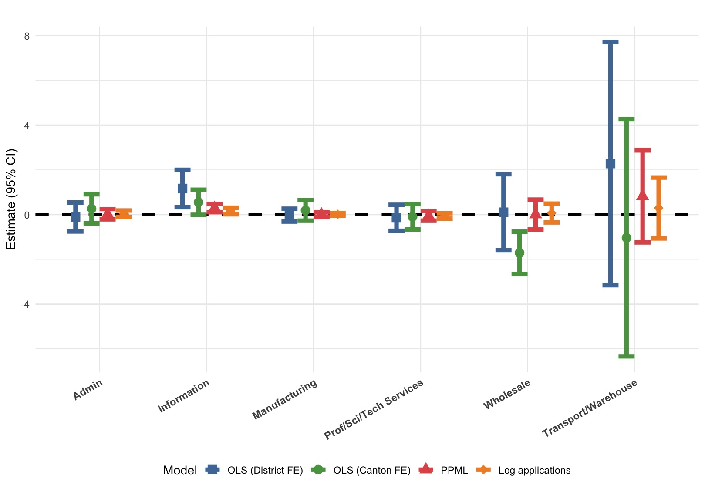Regress the count of applications by district on MNC Presence Index
Results suggest there is no extensive margin effect of multinationals on students applying to university
Estimation Method
Estimate the effect of MNC presence on student field of study choice by using a Multinomial Logit Model and then estimating the Average Marginal Effects (AMEs) for each industry
This produces estimates that tell us how much the probability of choosing a particular major changes when the MNC Presence Index increases by one unit
Interpretation
- In this model, an increase of one unit in the index is interpreted as an additional firm-year in the student’s district of residence
- This can be either a new firm entering or an existing firm maturing
- For greater clarity, I report results by exposure level differences
- Low \(\rightarrow\) High Exposure
- I also report the distance decay showing how hyper-local effects are
Manufacturing Industry Results All Industries
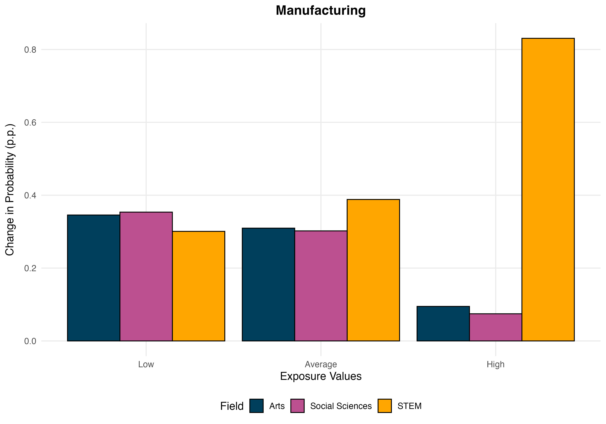STEM Field Increases in Probability by 52.9 p.p. when going from Low to High Presence Index
Administrative Services Industry Results

Social Science and Professional Studies Increases in Probability by 39.81 p.p. when going from Low to High Presence Index
Distance Decay

Multinational firm effects are hyperlocal being concentrated in the 0 to 5 km distance margin
Distance Decay

Multinational firm effects are hyperlocal being concentrated in the 0 to 5 km distance margin
Robustness - Remove Attachment Between Field of Study and Industry

Trends remain similar across industry and field with smaller coefficients
Heterogeneity - Sex
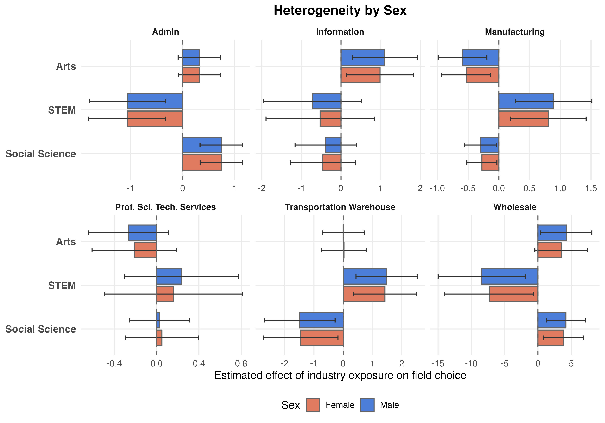Multinational Firm effects are not significantly different between men and women
Heterogeneity - GAM All Industries
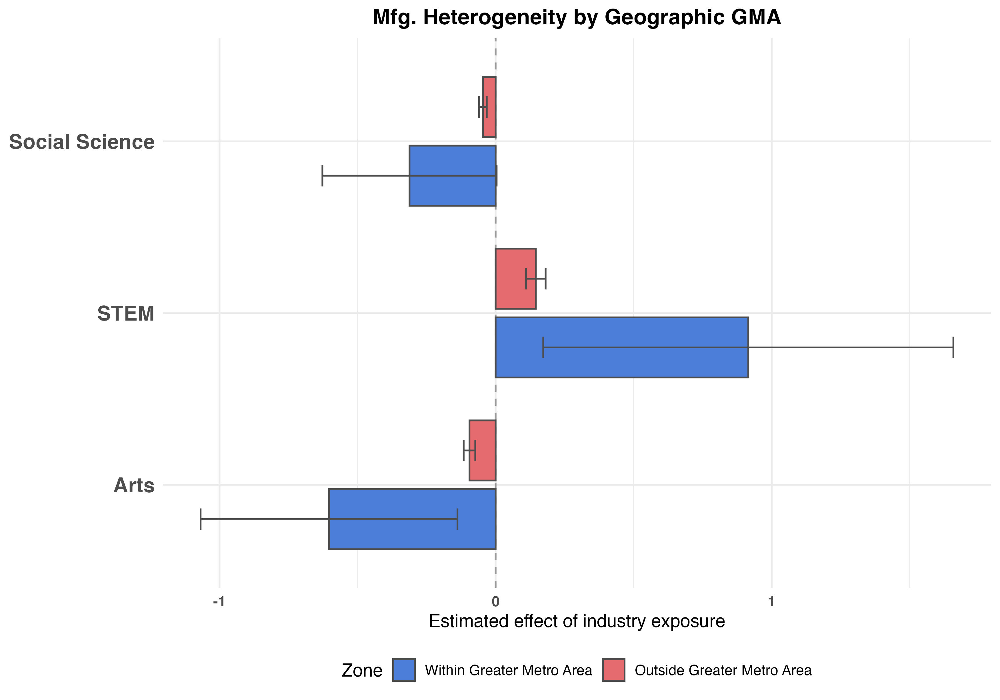 Manufacturing
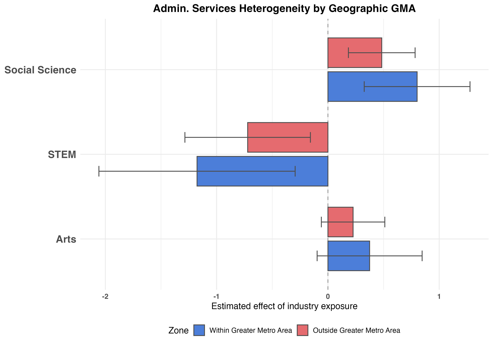 Administrative Services
Effects are largely concentrated in the Greater Metropolitan Area which aligns with effects being hyperlocal
Conclusion
- Multinationals reshape local incentives to acquire skills
- I ask if this influence impacts students choice of major through being exposed to multinationals
- Using local exposure to multinational firms, I estimate how exposure to MNC activity shapes field of study application decisions
- Results suggest that students choice of field of study are shifted to those that better align with MNC industry needs
- This highlights a new channel through which FDI shapes formation of human capital in LMICs
Appendix
Costa Rica FDI Inflows

Costa Rica Tertiary Enrollment
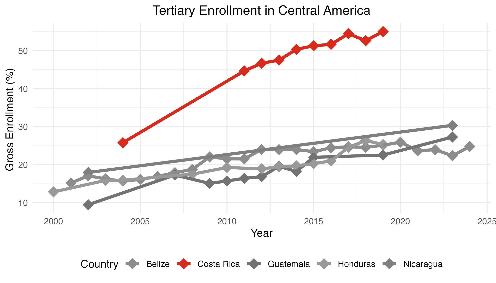Application Example

GAM

Districts within GAM Size
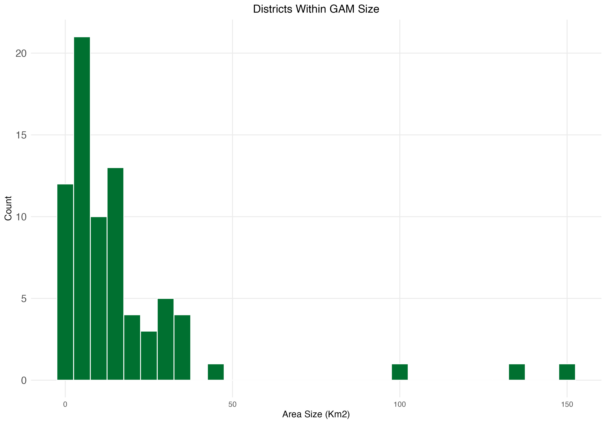Student Location (National)

Student Location (Central Valley)
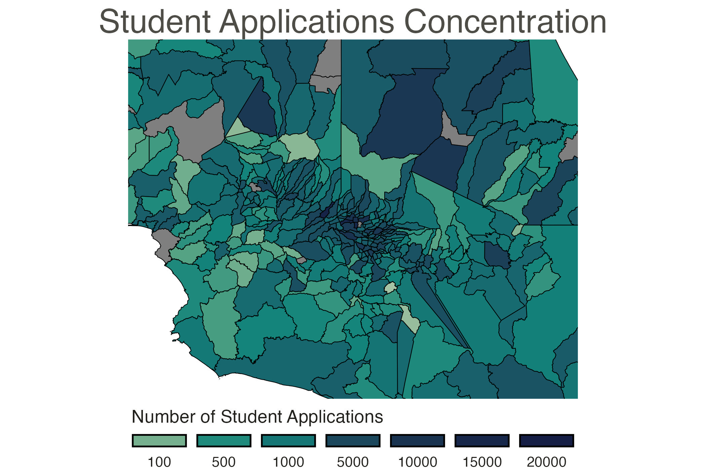Firm Location (National)

Firm Location (National)

Probability Attachment Weights Statistics
Data: Annual American Community Survey (ACS) microdata with person-level survey weights
Weighting: Individual observations weighted to recover population-representative counts by field of study and industry of employment
Link: Field-of-study shares constructed within industry using weighted counts, aggregated into field of study categories
Field to Industry Mapping: Shares reflect the weighted distribution of degree fields among employed individuals within each industry
Probability Attachment Weights Statistics

Extensive Margin Effects

All Industries Results
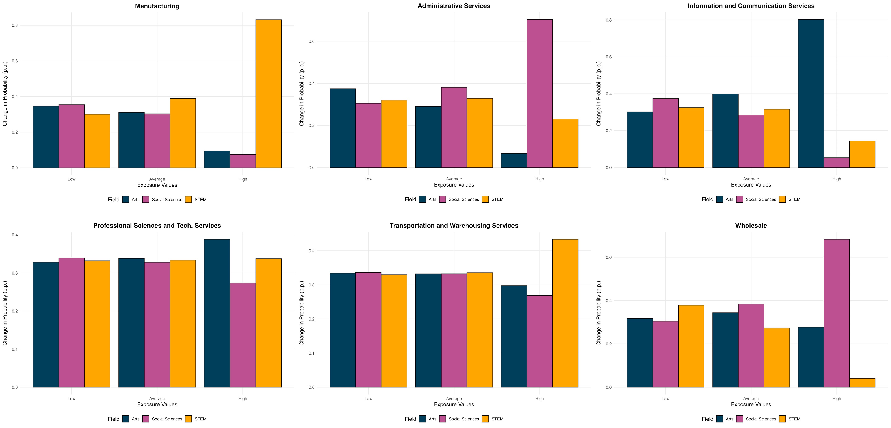Distance Decay (0-5 Km)
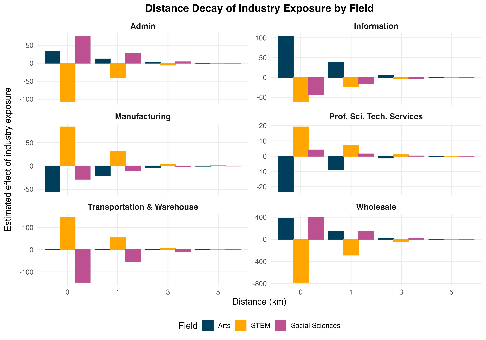Percentage Point Changes in Probability of Field Choice
Heterogeneity - GAM
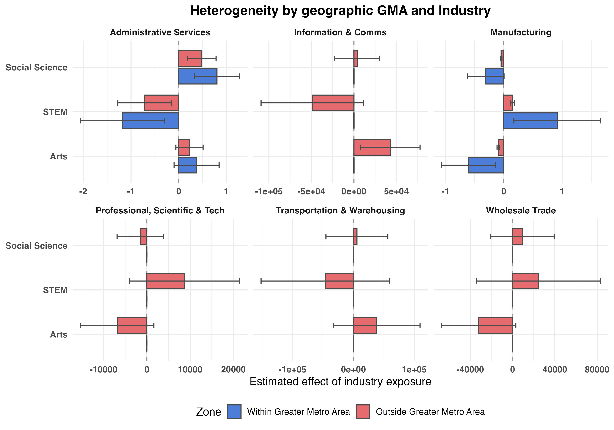References
Multinational Presence Shapes College Major Choice